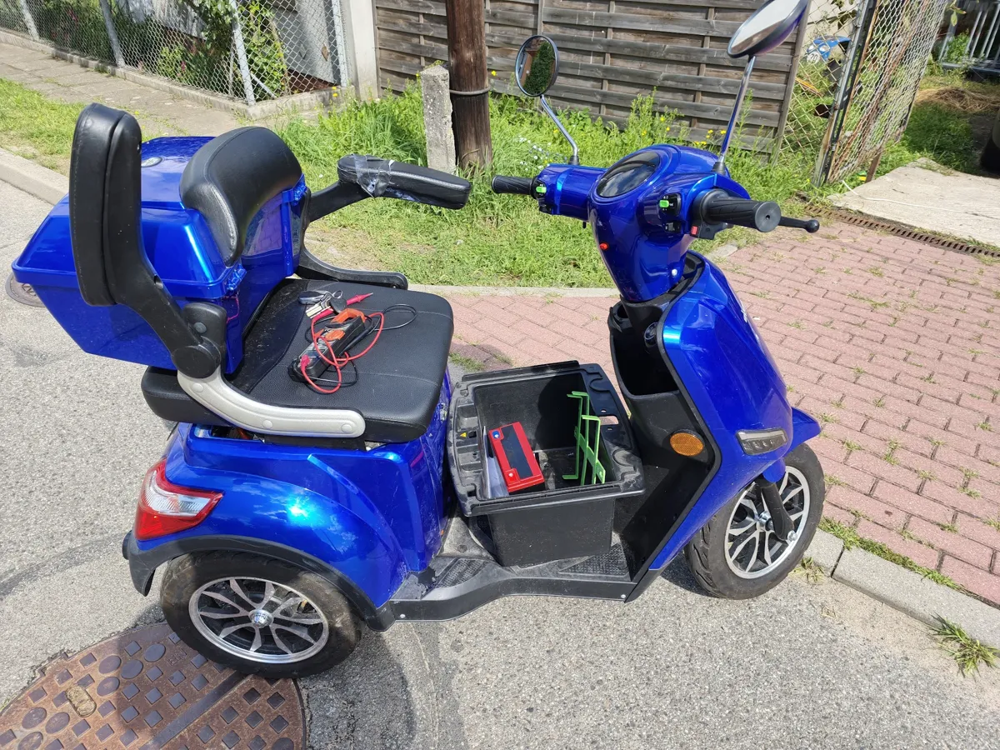

Układ jezdny i mechanika
- wymiana opon i dętek
- kasowanie luzów na kierownicy i mechanizmie składania
- naprawa zawieszenia
Serwis w Kutnie
Przestała działać, coś stuka, hamulec nie trzyma, bateria szybko pada? Nie szukaj serwisu kilkadziesiąt kilometrów dalej. Naprawiamy na miejscu, a z Kutna i okolic do 30 km możemy odebrać hulajnogę spod domu.
Kliknij część, która sprawia kłopot
Typowe objawy:
Wybierz część na rysunku. Pokażemy typowe objawy i to, co z nimi robimy.
Zgłoś tę usterkęAdresul. Ks. Piotra Ściegiennego 25, 99-300 Kutno
Godzinypon–pt 9:00–18:00, sob 10:00–15:00
Odbiór sprzętuKutno i okolice do 30 km
Telefon889 503 420
Wszystko, co w hulajnodze elektrycznej się psuje: od dętki po sterownik. Wycenę podajemy po obejrzeniu sprzętu, bo ta sama usterka w dwóch modelach to często dwie różne naprawy.
Cztery krótkie pytania. Na końcu wysyłasz gotową wiadomość SMS-em albo mailem, a my wiemy, z czym przyjedziesz.
Wolisz od razu porozmawiać?
889 503 420
W promieniu 30 km od serwisu możemy przyjechać po sprzęt, naprawić go i odwieźć z powrotem. Nie musisz pakować hulajnogi do auta ani prowadzić jej przez pół miasta z rozładowaną baterią.
Odległość liczymy w linii prostej od ul. Ściegiennego 25. Przy samej granicy zadzwoń, ustalimy.

Naprawiamy też skutery elektryczne, rowery elektryczne i inne pojazdy na baterię. Elektryka, akumulatory, hamulce i mechanika działają w nich podobnie, więc trafiają na ten sam stół.
Masz nietypowy sprzęt? Zadzwoń i opisz, co się dzieje. Powiemy od razu, czy się tym zajmiemy.
4,4 w Google, 10 opinii. Kilka z nich:
Bardzo dobry serwis hulajnóg elektrycznych. Naprawa wykonana szybko i profesjonalnie, a obsługa bardzo miła i pomocna. Hulajnoga działa teraz bez zarzutu. Zdecydowanie polecam!
Super serwis, naprawa zrobiona idealnie, mycie – wygląda jak nowa. Daję opinię 5/5, super obsługa i przede wszystkim miła.
Super serwis, mega miła i profesjonalna obsługa z szybką realizacją.
Wszystko git, tanio, bardzo dobra jakość. Hulajnoga jest teraz jak nowa, bardzo szybko naprawili. Wszystkim polecam!
Zależy od usterki i modelu. Wymiana dętki to inna praca niż naprawa sterownika. Najpierw sprawdzamy, co jest przyczyną, i mówimy, ile będzie kosztować, a dopiero potem naprawiamy.
Tak, z Kutna i okolic w promieniu 30 km. Przyjedziemy po sprzęt, naprawimy go i odwieziemy. Sprawdź swoją miejscowość.
Najlepiej zadzwoń przed przyjazdem pod 889 503 420. Upewnimy się, że ktoś jest na miejscu, i od razu wstępnie powiesz, co się dzieje.
Tak. Robimy diagnostykę, renowację i regenerację baterii oraz kalibrację ogniw. Często to tańsze rozwiązanie niż nowa bateria.
Tak, zajmujemy się modernizacjami i zmianą blokad prędkości. Pamiętaj tylko, że po drogach publicznych hulajnoga elektryczna może jechać najwyżej 20 km/h. Szybciej możesz jeździć wyłącznie po terenie prywatnym.
Tak, pracujemy przy różnych pojazdach elektrycznych. Przy nietypowym sprzęcie najpierw zadzwoń i opisz problem.
ul. Księdza Piotra Ściegiennego 25
99-300 Kutno
| Poniedziałek | 9:00–18:00 |
|---|---|
| Wtorek | 9:00–18:00 |
| Środa | 9:00–18:00 |
| Czwartek | 9:00–18:00 |
| Piątek | 9:00–18:00 |
| Sobota | 10:00–15:00 |
| Niedziela | nieczynne |